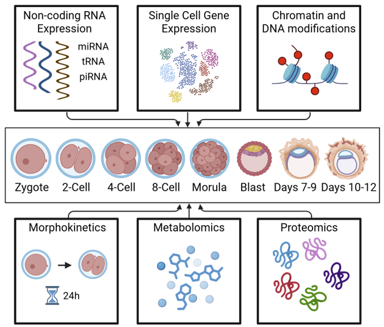
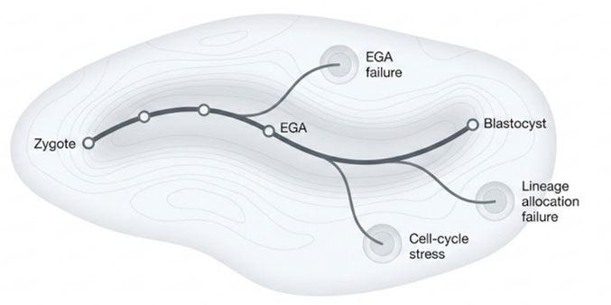
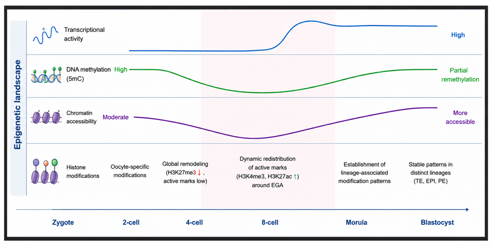

The Digital Embryo
The Digital Embryo is a multi-omic atlas and predictive model of human preimplantation development. We integrate single-cell transcriptomic, epigenomic, chromatin, genetic, and imaging datasets to learn how embryos move from zygote to blastocyst.
The long-term goal is an interpretable in silico model that identifies normal developmental trajectories, detects divergence, and nominates regulatory programs for experimental validation.

Molecular Causes of Embryo Arrest
Many embryos generated during IVF fail before blastocyst formation. We study embryo arrest as a molecular state, not only a visual outcome, by comparing transcriptomic dynamics, maternal-to-zygotic transition signatures, RNA velocity, transposable element activity, splicing, and allelic features.
These analyses are designed to identify when developmental divergence begins and which molecular programs may explain why some embryos progress while others stall.

Wet-Lab Validation and Clinical Translation
Computational predictions are only useful if they connect back to biology. Through the CReATe Fertility Centre collaboration, we are developing wet-lab workflows for embryo single-cell and multi-omic profiling, alongside projects in endometrial receptivity, implantation failure, and fertility-related RNA biomarkers.
This translational arm links model predictions to new samples, reproductive medicine questions, and clinically meaningful experimental designs.
